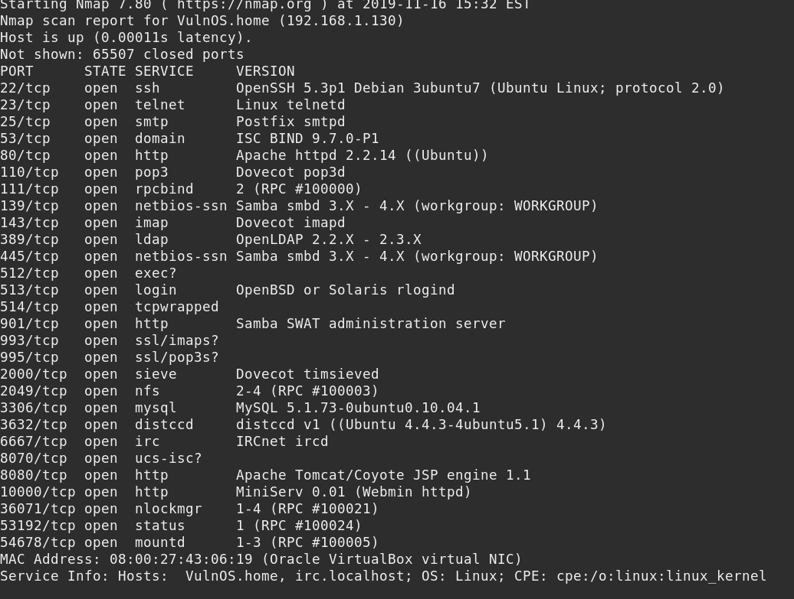

2. Finding Services and Ports
$ nmap -sV -p- 192.168.1.130
Output:

We can see that there are a lot of services currently running on the Target VM, Port 80, 8080 and 10000 are available for HTTP. This tells us that the HTTP Service is currently running on the Target VM.
Index